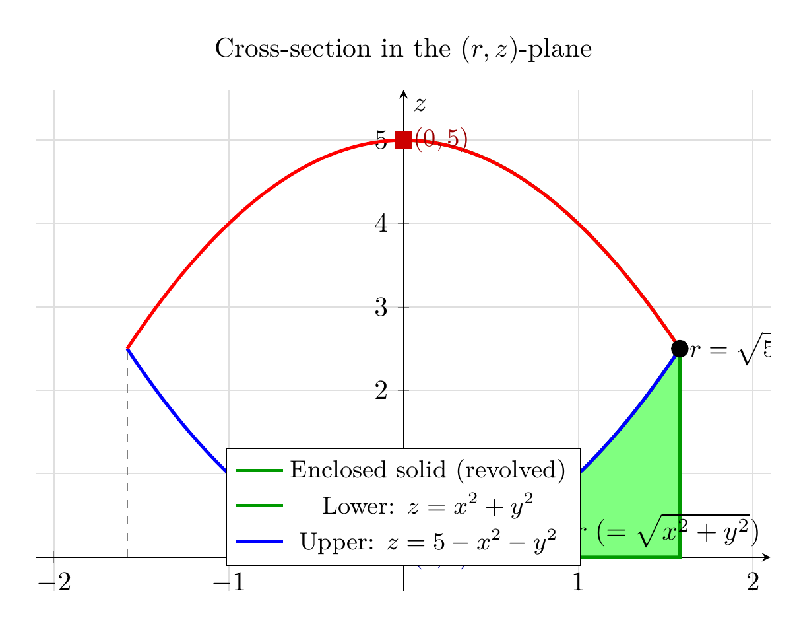

Please solve the problem in the following image.
(Image `20260929_022922_243588_utc_0800_0.png`. Alt text: Image: human_20260929_022922_243588_utc_0800)
20260929_022922_243588_utc_0800_0.png
End of problem
Answer
## Problem
Use a graphing device to draw the solid enclosed by the paraboloids $z = x^2 + y^2$ and $z = 5 - x^2 - y^2$.
## Setting Up the Problem
The two surfaces are circular paraboloids that share a common axis (the $z$-axis):
- **Lower surface** (opens upward): $z = x^2 + y^2 = r^2$
- **Upper surface** (opens downward): $z = 5 - x^2 - y^2 = 5 - r^2$
Both are expressed compactly in cylindrical coordinates, where $r^2 = x^2 + y^2$.
## Step 1 — Find Where the Paraboloids Meet
Set the two expressions for $z$ equal:
$$
r^2 \;=\; 5 - r^2 \quad\Longrightarrow\quad 2r^2 = 5 \quad\Longrightarrow\quad r = \sqrt{\tfrac{5}{2}}.
$$
Substituting back gives $z = r^2 = \tfrac{5}{2}$. So the two paraboloids intersect in the horizontal circle
$$
x^2 + y^2 = \tfrac{5}{2}, \qquad z = \tfrac{5}{2},
$$
of radius $\sqrt{5/2}\approx 1.581$ at height $z=2.5$. This circle is the "rim" of the enclosed solid (a shape known as a *bicone* or *football* / *lens-shaped* solid).
---
pgfplots_0.png
---
## Step 2 — The Solid and Its Cylindrical Bounds
Because the lower paraboloid lies below the upper one inside the circle $r\le\sqrt{5/2}$, the enclosed solid $E$ is described in cylindrical coordinates as
$$
E = \{(r,\theta,z):\; 0\le r\le \sqrt{5/2},\; 0\le\theta\le 2\pi,\; r^2 \le z \le 5-r^2\}.
$$
A single radial slice (the green region in the figure below) shows this stack: at radius $r$, $z$ runs from the lower paraboloid $z=r^2$ up to the upper paraboloid $z=5-r^2$.
---
\documentclass[border=10pt]{standalone}
\usepackage{pgfplots}
\pgfplotsset{compat=1.18}
\begin{document}
\begin{tikzpicture}
\begin{axis}[
width=11cm, height=8cm,
xlabel={$r \;(=\sqrt{x^2+y^2})$},
ylabel={$z$},
title={Cross-section in the $(r,z)$-plane},
xmin=-2.1, xmax=2.1, ymin=-0.4, ymax=5.6,
xtick={-2,-1,0,1,2}, ytick={0,1,2,3,4,5},
grid=major, grid style={gray!25},
legend style={at={(0.5,0.05)}, anchor=south, draw=black, font=\small},
axis lines=middle,
]
% Fill the enclosed solid region (using parameterization)
\addplot[
domain=0:1.5811388300841898,
samples=80, fill=green!50, draw=green!60!black, very thick
] ({x}, {x^2}) \closedcycle;
% Add the upper edge of the enclosed region
\addplot[domain=0:1.5811388300841898, samples=80, draw=green!60!black, very thick] ({x}, {5-x^2});
\addlegendentry{Enclosed solid (revolved)}
% Lower paraboloid (full curve)
\addplot[domain=-1.5811:1.5811, samples=80, blue, very thick] {x^2};
\addlegendentry{Lower: $z = x^2+y^2$}
% Upper paraboloid (full curve)
\addplot[domain=-1.5811:1.5811, samples=80, red, very thick] {5-x^2};
\addlegendentry{Upper: $z = 5-x^2-y^2$}
% Intersection point
\addplot[only marks, mark=*, mark size=3pt, color=black] coordinates {(1.5811, 2.5)};
\node[anchor=west] at (axis cs:1.5811, 2.5)
{\small $r=\sqrt{5/2},\; z=5/2$};
% Vertical dashed lines at intersection
\addplot[dashed, gray] coordinates {(1.5811, 0) (1.5811, 2.5)};
\addplot[dashed, gray] coordinates {(-1.5811, 0) (-1.5811, 2.5)};
% Apex of upper paraboloid
\addplot[only marks, mark=square*, mark size=3pt, color=red!80!black] coordinates {(0, 5)};
\node[anchor=west, red!60!black] at (axis cs:0, 5) {\small $(0,5)$};
% Apex of lower paraboloid
\addplot[only marks, mark=square*, mark size=3pt, color=blue!80!black] coordinates {(0, 0)};
\node[anchor=west, blue!60!black] at (axis cs:0, 0) {\small $(0,0)$};
\end{axis}
\end{tikzpicture}
\end{document}

pgfplots_1.png
---
## Step 3 — Volume of the Solid (verification)
Using the cylindrical-coordinate triple integral,
$$
V \;=\; \int_0^{2\pi}\!\!\int_0^{\sqrt{5/2}}\!\!\int_{r^2}^{5-r^2} r\,dz\,dr\,d\theta
\;=\; 2\pi\int_0^{\sqrt{5/2}} r\bigl[(5-r^2)-r^2\bigr]\,dr
\;=\; 2\pi\int_0^{\sqrt{5/2}} (5r-2r^3)\,dr .
$$
Evaluating,
$$
V \;=\; 2\pi\left[\frac{5r^2}{2}-\frac{r^4}{2}\right]_0^{\sqrt{5/2}}
\;=\; 2\pi\!\left[\frac{25}{4}-\frac{25}{8}\right]
\;=\; 2\pi\cdot\frac{25}{8}
\;=\; \boxed{\dfrac{25\pi}{4}}.
$$
Numerically, $V \approx 19.6350$.
## Summary
- The two paraboloids intersect in the circle $x^2+y^2=\tfrac{5}{2}$ at $z=\tfrac{5}{2}$.
- In cylindrical coordinates the solid is $0\le\theta\le 2\pi$, $0\le r\le\sqrt{5/2}$, $r^2\le z\le 5-r^2$.
- Volume of the solid: $V = \dfrac{25\pi}{4}$.